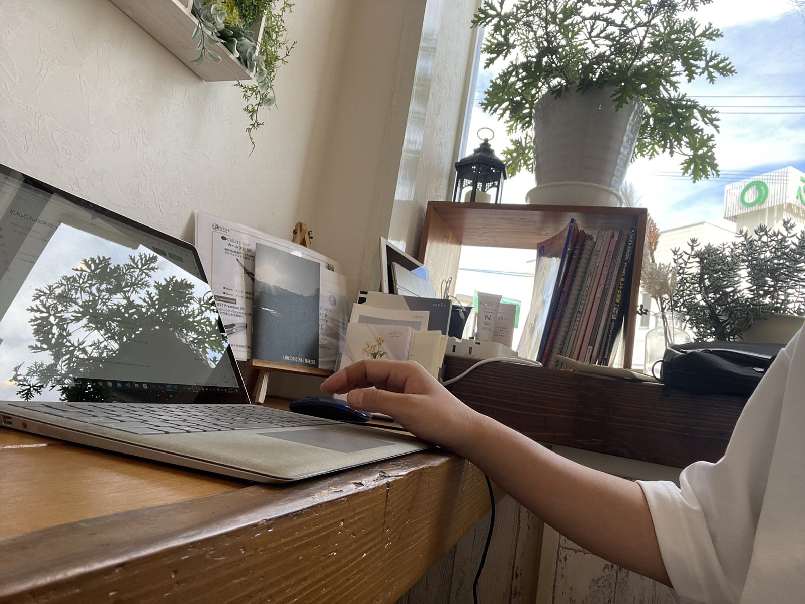
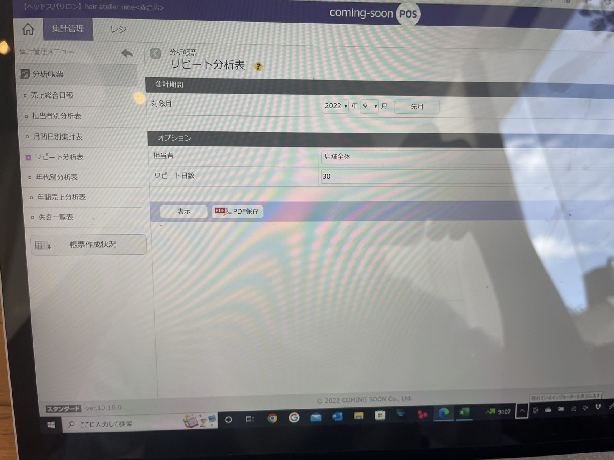

どんどん成果が上がってる↑↑
おはようございます。
アトリエ・ナインの菅野です。
どんどん秋になってきて、もう年末まであと少し。
今日も事務のお仕事をしながら、ブログ更新。

最近お店が忙しいのに、自分はサロンワーク追われることなく、穏やかな仕事が出来てきて、ほんとスタッフに感謝しかないですね。
今年のアトリエ・ナインは色々と変化の年でした。
抜本的な入客方法の見直し、落とし込み、一生顧客になっていただけるようにすべて僕のノウハウをスタッフに落とし込めるように、マニュアルの作成、トレーニングを実施。
今年の4月から本格的にスタッフの落とし込み開始と、教育をメインにスタッフがどんどん成長できるように助力させていただきました。
その成果がどんどん出てきて、先月までの成果ですごい数字をたたき出してくれました。

新規再来率が４０～５０％だったのが７０％以上になり、
次回新規の方の予約率が３０％から６０％以上。
単価が9000円から10000円以上。
生産性が5５万から90万まで
飛躍してくれました。
ホント、びっくりな数字、、、。
ここまで上がると、もう教えなくても良いっぽいですね(^_-)-☆
(まぁ～トレーニングって言っても、ただマニュアル作ってこの通りにやってごらん、、、くらいしか言ってないですが。)
ホント今のスタッフ全員、優秀な子達です。
そろそろ、自分の入客数を空けれるようにして、スタッフがお客様のキレイを作れる環境を作っていかないと。
このままだと、12月の数字が楽しみ。
来年からもっとスタッフが働きやすいよう、労働時間短縮や休みの増加もしていかないな。
それでは、また。
株式会社 アトリエ・ナイン 代表 菅野
2015年9月、福島県福島市に《hair atelier nine》をオープン。
福島市で髪質改善、ヘッドスパサロンを展開しており、２０１９年１０月には待望の２店舗目をオープン。
オープンしてから３年目に法人化。オープン７年目に突入。サロンの労働環境改善のため社員の週休２日を実現。サロンワーク８時間で残業なし。スタッフに働きやす環境整備をもっとうに経営を心がけております。
福島市の美容室の求人をお探しの美容師さんぜひお話だけでもいかがでしょうか？？
求人に少しでも興味のある方はお気軽にお問い合わせください。
サロン見学や求人の概要の問合せ、相談など、なんでもお待ちしております。
LINE：@jnp9523c
までお問い合わせください